Ajourné · Interval Palette · M05 asset review (not live)
Support visuals
Card and chapter variants, icons, banners, the two added naming/triad figures and the six wider Atlas sections. IPV-33 (six door motifs) is deferred pending a content decision.
IPV-02 · IPV-03 · variants
Card and chapter art (13 each, derived from the interval art, no model call)
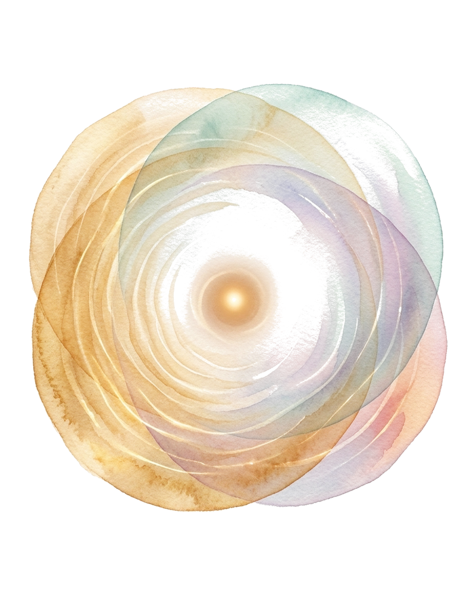

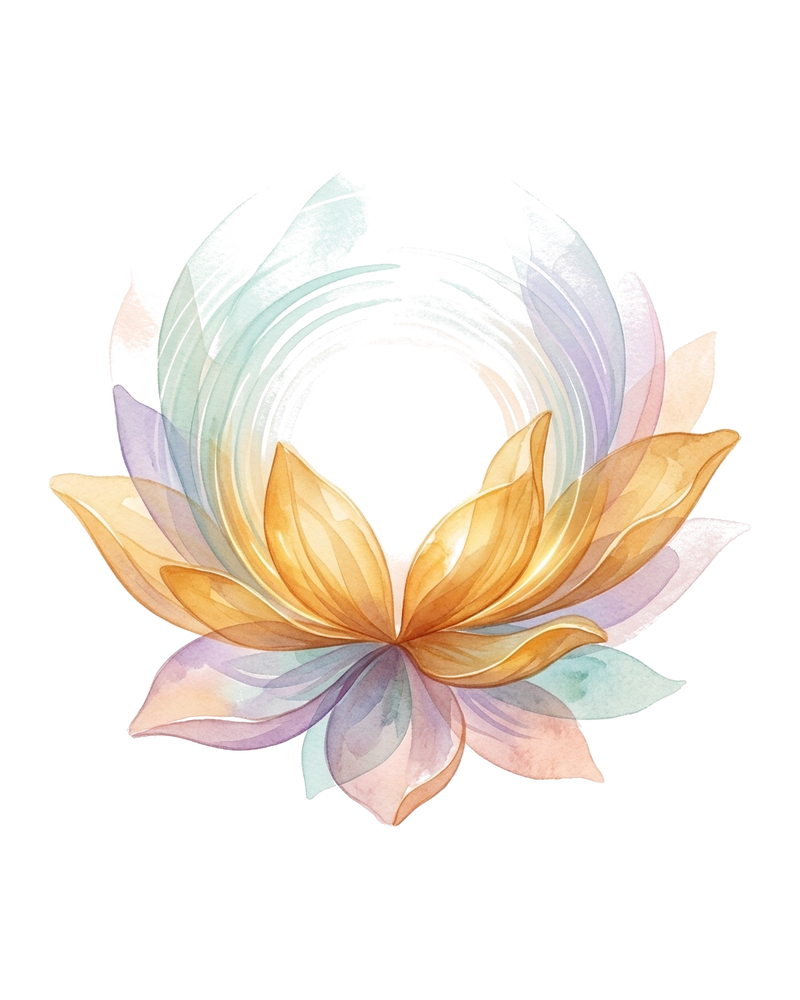

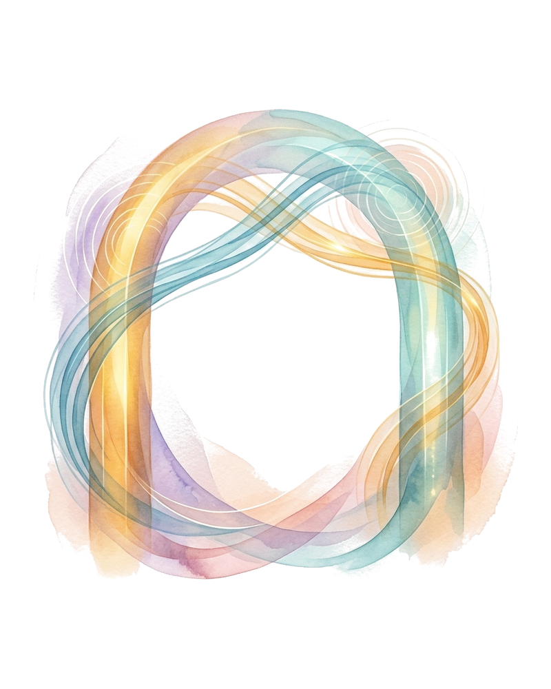

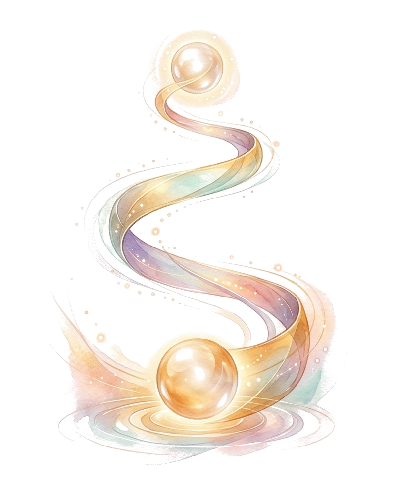

IPV-31 · micro-icon family
Thirteen icons (96px crops; the native name always accompanies each)
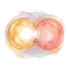
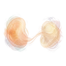
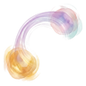
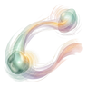
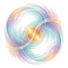
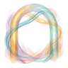
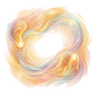
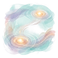
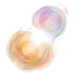
IPV-32 · section mini-banners
Four banners
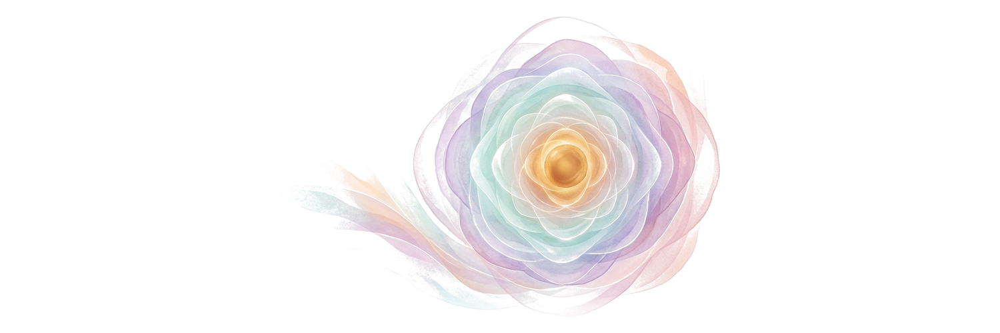
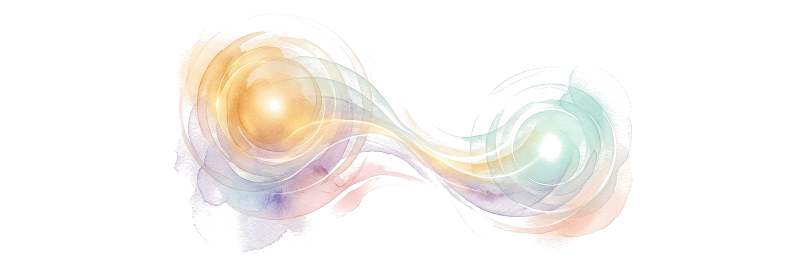
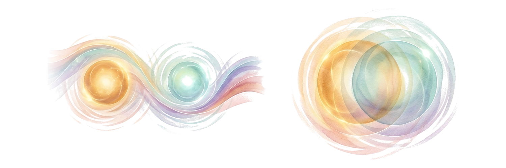
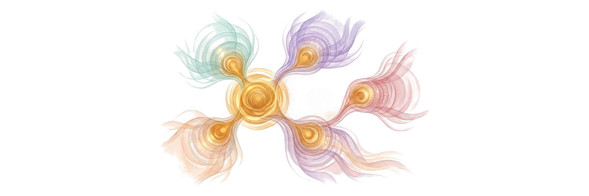
IPV-34 · SUPPORT · NATIVE (+ IPV-08 art)
Same key, two interval names (new: Atlas layer B)
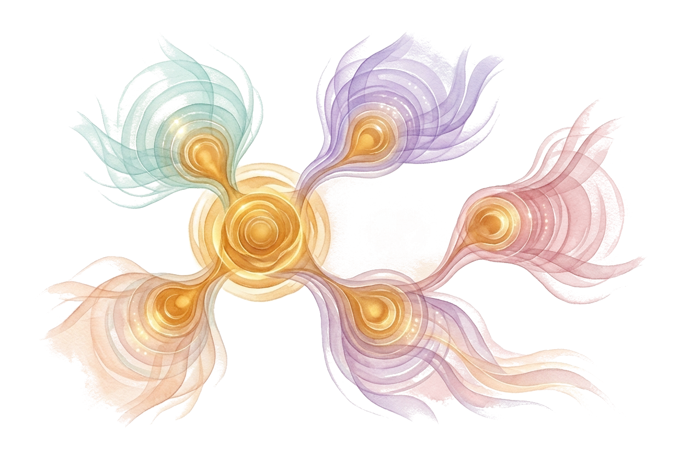
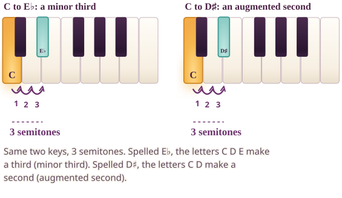
How to read the picture. The same two keys carry two correct names depending on how the upper note is spelled. Counting letters decides the interval number.
On your own keyboard. Play C and the black key above D. Say it as C to E♭, then as C to D♯: same keys, two names.
Alt text of the exact figure
Two keyboards with the same two keys highlighted, C4 and the black key above D. First it is spelled E-flat: letters C, D, E make a third, so it is a minor third. Second it is spelled D-sharp: letters C, D make a second, so it is an augmented second. Both are 3 semitones.IPV-35 · SUPPORT · NATIVE (+ IPV-08 art)
The third note changes a world (new: Atlas layer D)
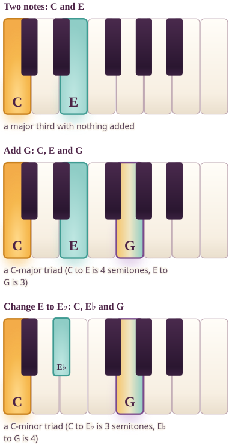
How to read the picture. Start from two notes, add a third, then change one key. The structure shows exactly which keys form each shape.
On your own keyboard. Play C and E together, add G, then replace E with E♭ and listen to how the shape changes.
Alt text of the exact figure
Three keyboards from C4. First C and E alone, a major third of 4 semitones. Second C, E and G together, a C-major triad. Third C, E-flat and G, a C-minor triad, where moving one key down changes the quality.Atlas layers A–F · placement
Six wider Atlas sections: which art each uses
Atlas layer A

Deeper layer A — Why intervals can sound smooth, rough or fused
Atlas layer B
Deeper layer B — How the interval gets its real name
Atlas layer C

Deeper layer C — Inversion, the octave's hidden symmetry
Atlas layer D
Deeper layer D — The third note changes a world
Atlas layer E

Deeper layer E — Paint your own palette
Atlas layer F
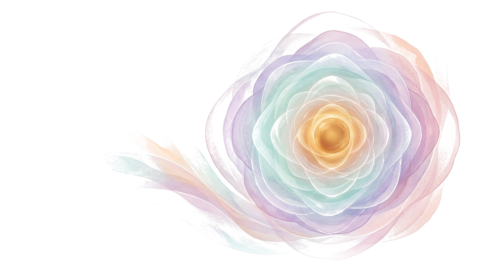
Deeper layer F — Hear them in the wider musical world